건설재료시험기사 (2014-09-20 기출문제)
1과목: 콘크리트공학
1. 경량골재 콘크리트에 대한 설명으로 잘못된 것은?
- 경량골재 콘크리트란 일반적으로 기건 단위용적질량이 2.0t/m3이하의 콘크리트를 말한다.
- 천연경량골재는 인공경량골재에 비해 입자의 모양이 좋고 흡수율이 작아 구조용으로 많이 쓰인다.
- 콘크리트의 수밀성을 기준으로 물-결합재비를 정할 경우에는 50% 이하를 표준으로 한다.
- 경량골재는 동결융해에 대한 저항성이 보통 콘크리트보다 상당히 나쁘므로 유의해야 한다.
(정답률: 77%)

2. PS 강재에 요구되는 일반적인 특성을 설명한 것으로 옳지 않은 것은?
- 인장강도가 높아야 한다.
- 릴랙세이션이 커야 한다.
- 어느 정도의 늘음과 인성이 있어야 한다.
- 항복비가 커야 한다.
(정답률: 80%)
3. 다음 관리도의 종류에서 정규분포이론이 적용되지 않는 것은?
- P 관리도(불량률 관리도)
- x 관리도(측정값 자체의 관리도)
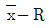
관리도(평균값과 범위의 관리도)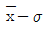
관리도(평균값과 표준편차의 관리도)
(정답률: 88%)
4. 콘크리트 제작시 재료의 계량에 대한 설명으로 틀린 것은?
- 각 재료는 1배치씩 질량으로 계량하여야 한다.
- 계량 허용오차는 물과 혼화제가 각각 ±2% 이하이다.
- 연속믹서를 사용할 경우, 각 재료는 용적으로 계량해도 좋다.
- 시멘트의 계량 허용오차는 ±1%이다.
(정답률: 82%)
5. 콘크리트 구조물의 내화성을 향상시키기 위한 방안으로 틀린 것은?
- 제조 시에 골재는 화강암이나 사암을 사용하면 좋다.
- 콘크리트 표면을 단열재로 보호한다.
- 내화성능이 약한 강재는 보호하여 피복두께를 충분히 취한다.
- 철근의 외측 콘크리트가 벗겨지는 것을 방지하기 위하여 팽창성 금속(expanded metal)을 표층부에 넣는다.
(정답률: 83%)
6. 콘크리트의 비파괴 시험 중 철근 부식 여부를 조사할 수 있는 방법이 아닌 것은?
- 전위차 적정법
- 자연전위법
- 분극저항법
- 전기저항법
(정답률: 67%)
7. 매스 콘크리트의 온도균열 발생에 대한 검토는 온도균열지수에 의해 평가하는 것을 원칙으로 하고 있다. 철근이 배치된 일반적인 구조물의 균열 발생을 방지하여야 할 경우 표준적인 온도균열지수의 값으로 옳은 것은?
- 1.5이상
- 1.2~1.5
- 0.7~1.2
- 0.7 이하
(정답률: 64%)
8. 콘크리트 배합의 잔골재율에 대한 설명으로 틀린 것은?
- 고성능 공기연행 감수제를 사용한 콘크리트의 경우서 물-결합재비 및 슬럼프가 같으면, 일반적인 공기연행 감수제를 사용한 콘크리트와 비교하여 잔골재율을 3~4% 정도 크게 하는 것이 좋다.
- 공사 중에 잔골재의 입도가 변하여 조립률이 ±0.20 이상 차이가 있을 경우에는 워커빌리티가 변화하므로 배합을 수정할 필요가 있다.
- 유동화 콘크리트의 경우, 유동화 후 콘크리트의 워커빌리티를 고려하여 잔골재율을 결정할 필요가 있다.
- 잔골재율은 소요의 워커빌리티를 얻을 수 있는 범위 내에서 단위수량이 최소가 되도록 시험에 의해 정하여야 한다.
(정답률: 56%)
9. 거푸집 및 동바리의 구조를 계산할 때 연직하중에 대한 설명으로 틀린 것은?
- 고정하중으로서 콘크리트의 단위중량은 철근의 중량을 포함하여 보통 콘크리트인 경우 20을 적용하여야 한다.
- 고정하중으로서 거푸집 하중은 최소 0.4kN/m3 이상을 적용하여야 한다.
- 특수 거푸집이 사용된 경우에는 고정하중으로 그 실제의 중량을 적용하여 설계하여야 한다.
- 활하중은 구조물의 수평투영면적(연직방향으로 투영시킨 수평면적)당 최소 2.5kN/m2이상으로 하여야 한다.
(정답률: 76%)
10. 고압증기양생을 실시한 콘크리트의 특징에 대한 설명으로 틀린 것은?
- 고압증기양생을 실시한 콘크리트는 융해성의 유리석회가 없기 때문에 백태현상을 감소시킨다.
- 보통양생한 콘크리트에 비해 철근의 부착강도가 증가된다.
- 외관은 보통양생한 포틀랜드 시멘트 콘크리트 색의 특징과 다르며, 주로 흰색을 띈다.
- 고압증기양생한 콘크리트는 어느 정도의 취성을 가진다.
(정답률: 83%)
11. 콘크리트의 동결융해에 대한 설명 중 틀린 것은?
- 콘크리트의 초기 동결융해에 대한 저항성을 높이기 위해서는 물-시멘트비를 크게 한다.
- 콘크리트의 표층 박리(scaling)는 동결융해작용에 의한 피해의 일종이다.
- 동결융해에 의한 콘크리트의 피해는 콘크리트가 물로 포화되었을 때 가장 크다.
- 다공질의 골재를 사용한 콘크리트는 일반적으로 동결융해에 대한 저항성이 떨어진다.
(정답률: 71%)
12. 지름이 100mm이고 길이가 200mm인 원주형 공시체에 대한 할렬 인장시험결과 최대하중이 120kN이라고 할 경우 이 공시체의 할렬 인장강도는?
- 1.87MPa
- 3.82MPa
- 6.03MPa
- 7.66MPa
(정답률: 88%)
13. 아래 표와 같은 조건의 시방배합에서 굵은골재의 단위량은 약 얼마인가?
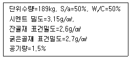
- 935kg
- 1,115kg
- 1,042kg
- 913kg
(정답률: 57%)
14. 콘크리트 타설에 대한 설명 중 옳지 않은 것은?
- 콘크리트를 2층 이상으로 나누어 타설할 경우, 상층의 콘크리트 타설은 원칙적으로 하층의 콘크리트가 굳기 시작하기 전에 해야 한다.
- 콘크리트 타설 도중에 표면에 떠올라 고인 블리딩 수가 있을 경우에는 표면에 도랑을 만들어 제거하여야 한다.
- 한 구획 내의 콘크리트는 타설이 완료될 때까지 연속해서 타설해야한다.
- 콘크리트는 그 표면이 한 구획 내에서는 거의 수평이 되도록 타설하는 것을 원칙으로 한다.
(정답률: 86%)
15. 프리스트레스트 콘크리트에 있어서 프리스트레싱을 할 때의 콘크리트의 압축강도는 프리스트레스를 준 직후 콘크리트에 일어나는 최대압축 응력의 최소 몇 배 이상이어야 하는가?
- 1.3배
- 1.5배
- 1.7배
- 2.0배
(정답률: 80%)
16. 콘크리트의 크리프에 영향을 미치는 요인 중 틀린 것은?
- 온도가 높을수록 크리프는 증가한다.
- 조강시멘트는 보통시멘트보다 크리프가 작다.
- 단위 시멘트량이 많을수록 크리프는 감소한다.
- 물-시멘트비, 응력이 클수록 크리프는 증가한다.
(정답률: 59%)
17. 유동화 콘크리트 배합에 대한 설명 중 틀린 것은?
- 슬럼프 증가량은 100mm 이하를 원칙으로 하며 50~80mm를 표준으로 한다.
- 베이스 콘크리트 및 유동화 콘크리트의 슬럼프 및 공기량 시험은 50m3마다 1회씩 실시하는 것을 표준으로 한다.
- 유동화제는 희석시켜 사용하며 미리 정한 소정의 양을 1/2씩 2번에 나누어 첨가한다.
- 유동화 콘크리트의 재유동화는 원칙적으로 할 수 없다.
(정답률: 74%)
18. 매일 생산되는 레미콘 공장의 품질 변동 상황을 알기 위해 사용되는 통계적 수법으로 적합한 것은?
- 관리도
- 산점도
- 파레토도
- 체크시트
(정답률: 91%)
19. 섬유보강 콘크리트에 사용되는 강섬유는 지름에 대한 길이의 비인 형상비는 어느 정도의 것을 사용하는가?
- 30~100
- 20~30
- 10~20
- 5~10
(정답률: 50%)
20. 콘크리트의 배합강도 결정에 대한 설명으로 옳지 않은 것은?
- 설계기준 압축강도가 20MPa이고, 압축강도 시험의 기록이 없는 현장의 배합강도는 27MPa로 정한다.
- 설계기준 압축강도가 40MPa이고, 압축강도 시험이 기록이 없는 현장의 배합강도는 49MPa로 정한다.
- 압축강도 시험 횟수가 20회인 현장에서 표준편차(S)의 보정계수는 1.08을 사용한다.
- 설계기준 압축강도 35MPa이고, 30회 이상의 시험 실적으로부터 구한 표준편차가 3MPa인 현장에서 배합강도를 38.49MPa로 정한다.
(정답률: 73%)
2과목: 건설시공 및 관리
21. 함수비가 큰 점질토의 다짐에 적합한 다짐 기계는 어느 것인가?
- 로드 롤러(Road Roller)
- 진동 롤러
- 탬핑 롤러(Tamping Roller)
- 타이어 롤러(Tire Roller)
(정답률: 87%)
22. 옹벽의 수평 저항력을 증가시키려면 다음 중 어느 방법이 가장 좋은가?
- 옹벽의 비탈구배를 크게 한다.
- 옹벽 전면에 Apron를 설치한다.
- 옹벽 기초 밑판에 돌기 Key를 설치한다.
- 옹벽 배면에 Anchor를 설치한다.
(정답률: 91%)
23. 암거의 매설을 위한 기초공에 대한 설명 중 옳지 않은 것은?
- 기초가 다소 불량한 곳은 침목, 콘크리트 침목 등의 기초공을 해야 한다.
- 기초가 양호하면 암거를 직접 매설하여도 된다.
- 기초바닥이 매우 불량할 때는 말뚝기초를 하여야 한다.
- 부등침하의 우려가 있는 기초에는 잡석, 조약돌 등을 포설한다.
(정답률: 65%)
24. 보통토(사질토)를 재료로 하여 35,000m3의 성토를 하는 경우 굴착 및 운반 토량(m3)은 얼마인가? (단, 토량환산계수 L=1.25, C=0.90)
- 굴착토량=38,889, 운반토량=48,611
- 굴착토량=32,400, 운반토량=40,500
- 굴착토량=28,800, 운반토량=50,000
- 굴착토량=32,400, 운반토량=45,000
(정답률: 81%)
25. 다음 중 포장 두께를 결정하기 위한 시험이 아닌 것은?
- CBR시험
- 평판재하시험
- 마샬 시험
- 1축압축시험
(정답률: 64%)
26. 불도저로 토공 작업을 하는 현장에서 다음과 같은 작업 조건일 때 불도저의 시간당 작업량을 본바닥 토량으로 계산하면?
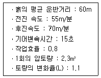
- 125.5m3/h
- 97.2m3/h
- 64.9m3/h
- 45.66m3/h
(정답률: 63%)
27. 암거의 배열방식 중 집수지거를 향하여 지형의 경사가 완만하고, 같은 습윤상태인 곳에 적합하며, 1개의 간선집수지 또는 집수지거로 가능한 한 많은 흡수거를 합류하도록 배열하는 방식은?
- 자연식(Natural system)
- 차단식(Intercepting system)
- 빗식(Gridiron system)
- 집단식(Grouping system)
(정답률: 84%)
28. 아스팔트 포장에서 표층에 가해지는 하중을 분산시켜 보조기층에 전달하며, 교통하중에 의한 전단에 저항하는 역할을 하는 층은?
- 차단층
- 기층
- 노체
- 노상
(정답률: 83%)
29. T.B.M(tunnel boring machine)공법에 대한 설명으로 거리가 먼 것은?
- 폭약을 사용하지 않고, 원형으로 굴착하므로 역학적으로도 안전하다.
- 기계의 시공 충격으로 인하여 폭파에 의한 터널굴착공법보다 동바리공이 더 많이 필요하다.
- 굴착은 필요 이상의 큰 단면을 하지 않으므로 라이닝과 본바닥에 밀착되어 재료가 절약된다.
- 굴착 진전이 비교적 빠른 반면, 다량의 열이 발생되므로 냉각설비가 필요하다.
(정답률: 80%)
30. 다음의 옹벽 설명에서 역 T형 옹벽에 대한 설명으로 옳은 것은?
- 자중과 뒤채움 토사의 중량으로 토압에 저항한다.
- 자중만으로 토압에 저항한다.
- 일반적으로 옹벽의 높이가 낮은 경우에 사용된다.
- 자중이 다른 형식의 옹벽보다 대단히 크다.
(정답률: 79%)
31. 댐의 그라우트(Grout)에 관한 기술 중 옳은 것은?
- 커튼 그라우트(curtain grout)는 기초암반의 변형성이나 강도를 개량하기 위하여 실시한다.
- 콘솔리데이션 그라우트(consolidation grout)는 기초암반의 지내력 등을 개량하기 위하여 실시한다.
- 콘택트 그라우트(contact grout)는 기초암반의 지내력 등을 개량하기 위하여 실시한다.
- 림 그라우트(rim grout)는 콘크리트와 암반사이의 공극을 메우기 위하여 실시한다.
(정답률: 72%)
32. 큰 중량의 중추를 높은 곳에서 낙하시켜 지반에 가해지는 충격에너지와 그 때의 진동에 의해 지반을 다지는 개량공법으로 대부분의 지반에 지하수위와 관계없이 시공이 가능하고 시공 중 사운딩을 실시하여 개량효과를 점검하는 시공법은?
- 지하연속벽 공법
- 폭파다짐 공법
- 바이브로플로테이션 공법
- 동다짐 공법
(정답률: 70%)
33.
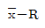
품질관리도에서 1조의 측정치가 9,7,12,13의 값을 가지며 2조의 측정치가 8,9,10,11의 값을 가질 때 중심(CL)의 값은?- 9.75
- 9.88
- 10.25
- 10.50
(정답률: 68%)
34. 터널굴착에 대한 다음 설명 중 틀린 것은?
- 전단면 굴착공법은 도갱을 하지 않고 전단면을 한꺼번에 굴착하는 공법으로 지질이 안정되어 있는 지반에 이용된다.
- 도갱은 버력 운반로, 용수의 처리, 지질의 확인을 목적으로 설치한다.
- 상부 반단면 공법에서 하반부의 굴착은 벤치컷 공법이 적당하다.
- 단면이 크고 지질이 나쁘면 저설도갱식이 적당하다.
(정답률: 54%)
35. 로드 롤러를 사용하여 전압횟수 4회, 전압포설 두께 0.2m, 유효 전압폭 2.5m, 전압 작업속도를 3km/h로 할 때 시간당 작업량을 구하면? (단, 토량환산계수는 1, 롤러의 효율은 0.8을 적용한다.)(오류 신고가 접수된 문제입니다. 반드시 정답과 해설을 확인하시기 바랍니다.)
- 500m3/h
- 251m3/h
- 200m3/h
- 151m3/h
(정답률: 36%)
36. 기초공의 구조상 요구 조건으로 틀린 것은?
- 시공 가능한 구조일 것
- 내구성을 가지고 경제적일 것
- 구조물을 안전하게 지지할 것
- 침하가 없을 것
(정답률: 88%)
37. 교량 시공방법 중 프리캐스트 세그먼트를 제작하여 교축방향으로 밀어 점차적으로 교량을 가설하며, 직선 또는 일정 곡률반경의 교량에 시공할 수 있는 공법은?
- FCM공법
- MSS 공법
- ILM공법
- 프리캐스트 거더 공법
(정답률: 46%)
38. P.C 말뚝에 관한 다음 설명 중 틀린 것은?
- 원심력 철근콘크리트 말뚝에 비하여 고가이다.
- 휨을 받을 때 변형량이 적다.
- 이음부의 시공이 어렵고 신뢰성이 없다.
- 균열이 잘 생기지 않으므로 강재가 부식하지 않고 내구성이 크다.
(정답률: 63%)
39. 다음은 네트워크(network) 공정표의 특징을 설명한 것이다. 옳지 않은 것은?
- 담당자의 공사착수가 예정되므로 미리 충분한 계획을 세울 수 있다.
- 공정표가 보기 쉽고 개념적인 것이 숫자화되어 신뢰도가 크다.
- 작성 및 수정이 어렵다.
- 공정의 진척, 지연의 상황 판단이 어렵다.
(정답률: 71%)
40. 지하수위가 높은 사질토 지반의 보일링 현상에 대한 대책으로 옳지 않은 것은?
- 흙막이벽의 강성을 높게 한다.
- 배면이 지하수위를 낮춘다.
- 흙막이벽의 근입 깊이를 깊게 한다.
- 바닥저면의 투수성을 낮게 한다.
(정답률: 56%)
3과목: 건설재료 및 시험
41. 조강 포틀랜드 시멘트 사용시 옳지 않은 것은?
- 거푸집을 단시일 내에 제거할 수 있다.
- 수화열이 크므로 단면이 큰 콘크리트 구조물에 적당하다.
- 양생기간을 단축시킨다.
- 한중공사에 적합하다.
(정답률: 62%)
42. 화성암은 산성암, 중성암, 염기성암으로 분류가 되는데, 이때 분류 기준이 되는 것은 무엇인가?
- 규산의 함유량
- 석영의 함유량
- 장석의 함유량
- 각섬석의 함유량
(정답률: 84%)
43. 대폭파 또는 수중폭파에서 동시폭파를 실시하기 위하여 뇌관 대신에 사용하는 것은?
- 도화선
- 도폭선
- 전기뇌관
- 첨장약
(정답률: 86%)
44. 고무혼입 아스팔트를 스트레이트 아스팔트와 비교할 때 다음 설명 중 옳지 않은 것은?
- 응집성 및 부착력이 크다.
- 마찰계수가 크다.
- 충격저항이 크다.
- 감온성이 크다.
(정답률: 83%)
45. 목재의 역학적 성질에 관한 설명으로 옳지 않은 것은?
- 목재의 인장강도는 섬유방향에 평행한 경우에 가장 강하다.
- 비중이 큰 목재는 가벼운 목재보다 강도가 크다.
- 일반적으로 심재가 변재에 비하여 강도가 크다.
- 섬유포화점 이하에서는 함수율이 클수록 강도가 크다.
(정답률: 48%)
46. 시멘트 응결 및 경화에 영향을 미치는 요소에 대한 설명으로 틀린 것은?
- 풍화되면 응결 및 경화가 빨라진다.
- 온도가 높으면 응결 및 경화가 빠른다.
- 배합 수량이 많으면 응결 및 경화가 늦어진다.
- 석고를 첨가하면 응결 및 경화가 늦어진다.
(정답률: 62%)
47. 컷백(cut back) 아스팔트에 대한 설명으로 틀린 것은?
- 대부분의 도로포장에 사용된다.
- 경화 속도 순서로 나누면 RC>MC>SC의 순이다.
- 컷백 아스팔트를 사용할 때는 가열하여 사용하여야 한다.
- 침입도 60~120 정도의 연한 스트레이트 아스팔트에 용제를 가해 유동성을 좋게 한 것이다.
(정답률: 78%)
48. 콘크리트용 혼화재료로 사용되는 고로 슬래그 미분말에 대한 설명으로 틀린 것은?
- 고로 슬래그 미분말을 사용한 콘크리트는 보통 콘크리트보다 콘크리트 내부의 세공경이 작아져 수밀성이 향상된다.
- 고로 슬래그 미분말은 플라이 애시나 실리카 퓸에 비해 포틀랜드 시멘트와의 비중차가 작아 혼화재로 사용할 경우 혼합 및 분산성이 우수하다.
- 고로 슬래그 미분말을 혼화재로 사용한 콘크리트는 염화물이온 침투를 억제하여 철근부식 억제효과가 있다.
- 고로 슬래그 미분말의 혼합률을 시멘트 중량에 대하여 70% 정도 혼합한 경우 중성화 속도가 보통 콘크리트의 1/2정도로 감소된다.
(정답률: 71%)
49. 콘크리트용 혼화재료에 대한 설명으로 틀린 것은?
- 방청제는 철근이나 PC강선이 부식하는 것을 방지하기 위해 사용한다.
- 급결제를 사용한 콘크리트는 초기 28일의 강도증진은 매우 크고, 장기강도의 증진 또한 큰 경우가 많다.
- 지연제는 시멘트의 수화반응을 늦춰 응결시간을 길게 할 목적으로 사용되는 혼화제이다.
- 촉진제는 보통 염화칼슘을 사용하며 일반적인 사용량은 시멘트 질량에 대하여 2% 이하를 사용한다.
(정답률: 77%)
50. 표면건조 포화상태의 골재시료 1,782g을 공기중에서 건조시켰더니 1,731g이 되었고, 이를 다시 노건조시켰더니 1,709g이 되었다. 이 골재시료의 흡수율은?
- 1.3%
- 2.8%
- 3.9%
- 4.3%
(정답률: 62%)
51. 콘크리트용 강섬유의 품질에 대한 설명으로 틀린 것은?
- 강섬유의 평균 인장강도는 500MPa 이상이 되어야 한다.
- 강섬유는 콘크리트 내에서 분산이 잘 되어야 한다.
- 강섬유 각각의 인장강도는 400MPa 이상이어야 한다.
- 강섬유는 16℃이상의 온도에서 지름 안쪽 90˚(곡선 반지름 3mm)방향으로 구부렸을 때, 부러지지 않아야 한다.
(정답률: 70%)
52. 표점거리 L=50mm, 직경 D=14mm의 원형 단면봉을 가지고 인장시험을 하였다. 축인장하중 P=100kN이 작용하였을 때, 표점거리 L=50.633mm와 직경 D=13.970mm가 측정되었다. 이 재료의 탄성계수는 약 얼마인가?(오류 신고가 접수된 문제입니다. 반드시 정답과 해설을 확인하시기 바랍니다.)
- 143GPa
- 51GPa
- 27GPa
- 8GPa
(정답률: 62%)
53. 목재에 대한 설명으로 틀린 것은?
- 목재의 벌목에 적당한 시기는 가을에서 겨울에 걸친 기간이다.
- 목재의 건조방법 중 자비법(煮沸法)은 자연건조법의 일종이다.
- 목재의 방부처리법은 표면처리법과 방부제 주입법으로 크게 나눌 수 있다.
- 목재의 비중은 보통 기건비중을 말하며 이때의 함수율은 15% 전후이다.
(정답률: 77%)
54. 콘크리트 내부에 독립된 미세기포를 발생시켜 콘크리트의 워커빌리티 개선과 동결융해에 대한 저항성을 갖도록 하기 위해 사용하는 혼화제는?
- 공기연행제
- 응결경화촉진제
- 지연제
- 기포제
(정답률: 74%)
55. 전체 500g의 잔골재를 체분석한 결과가 아래 표와 같을 때 조립률은?
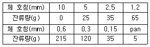
- 2.67
- 2.87
- 3.01
- 3.22
(정답률: 61%)
56. 콘크리트용 잔골재의 유해물 중 염화물(NaCl 환산량)의 함유량 한도(질량 백분율)는 몇 %인가?
- 0.04%
- 0.1%
- 0.5%
- 1%
(정답률: 71%)
57. 석재의 사용시 고려할 사항으로 틀린 것은?
- 인장응력이나 휨응력을 받는 곳은 가능한 사용하지 않는 것이 좋다.
- 콘크리트 포장용이나 외벽에 사용되는 석재는 연석을 피한다.
- 내화성 재료로 석재는 부적합하다.
- 석재는 구조용으로 사용할 경우 주로 압축력을 받는 부분에 사용된다.
(정답률: 61%)
58. 아스팔트의 특성을 설명한 것 중 틀린 것은?
- 샌드 아스팔트는 천연 아스팔트가 모래 속에 스며든 것이다.
- 레이크 아스팔트는 지표의 낮은 부분에 퇴적물이 생긴다.
- 스트레이트 아스팔트는 도로 포장용에 사용된다.
- 아스팔타이트는 천연 아스팔트가 석회암, 사암 등의 다공질 암석 사이에 스며든 것이다.
(정답률: 60%)
59. 다음 중 시멘트에 대한 설명 중 틀린 것은?
- 조강 시멘트 : 조기강도가 높아 한중 공사에 적합하다.
- 플라이 애시 시멘트 : 댐 공사에 적합하다.
- 팽창 시멘트 : 콘크리트의 건조 수축을 개선하기 위해 사용한다.
- 알루미나 시멘트 : 장식용 제조용에 사용된다.
(정답률: 78%)
60. 경량골재의 취급에 대한 설명 중 틀린 것은?
- 파쇄되지 않도록 한다.
- 습윤상태를 유지한다.
- 크고 작은 낱알이 분리되도록 한다.
- 햇볕을 덜 받는 장소에 보관한다.
(정답률: 77%)
4과목: 토질 및 기초
61. 말뚝 지지력에 관한 여러가지 공식 중 정역학적 지지력 공식이 아닌 것은?
- Dorr의 공식
- Terzaghi의 공식
- Meyerhof의 공식
- Engineering-News 공식
(정답률: 67%)
62. 다음 연약지반 개량공법에 관한 사항 중 옳지 않은 것은?
- 샌드드레인 공법은 2차 압밀비가 높은 점토와 이탄 같은 흙에 큰 효과가 있다.
- 장기간에 걸친 배수공법은 샌드 드레인이 페이퍼 드레인보다 유리하다.
- 동압밀공법 적용시 과잉간극 수압의 소산에 의한 강도 증가가 발생한다.
- 화학적 변화에 의한 흙의 강화공법으로는 소결 공법, 전기화학적 공법 등이 있다.
(정답률: 39%)
63. 흙을 다지면 흙의 성질이 개선되는데 다음 설명 중 옳지 않은 것은?
- 투수성이 감소한다.
- 부착성이 감소한다.
- 흡수성이 감소한다.
- 압축성이 감소한다.
(정답률: 51%)
64. 깊은 기초의 지지력 평가에 관한 설명 중 잘못된 것은?
- 정역학적 지지력 추정방법은 논리적으로 타당하나 강도정수를 추정하는 데 한계성을 내포하고 있다.
- 동역학적 방법은 항타장비, 말뚝과 지반조건이 고려된 방법으로 해머 효율의 측정이 필요하다.
- 현장 타설 콘크리트 말뚝 기초는 동역학적 방법으로 지지력을 추정한다.
- 말뚝 항타분석기(PDA)는 말뚝의 응력분포, 경시 효과 및 해머 효율을 파악할 수 있다.
(정답률: 66%)
65. 아래 조건에서 점토층 중간면에 작용하는 유효응력과 간극수압은?
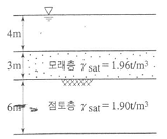
- 유효응력 : 5.58(t/m2), 간극수압 : 10(t/m2)
- 유효응력 : 9.58(t/m2), 간극수압 : 8(t/m2)
- 유효응력 : 5.58(t/m2), 간극수압 : 8(t/m2)
- 유효응력 : 9.58(t/m2), 간극수압 : 10(t/m2)
(정답률: 36%)
66. 포화된 점토에 대하여 비압밀비배수(UU)시험을 하였을 때의 결과에 대한 설명 중 옳은 것은? (단, ø:내부마찰각, c:점착력)
- ø와 c가 나타나지 않는다.
- ø는 “0”이 아니지만 c는 “0”이다.
- ø와 c가 모두 “0”이 아니다.
- ø는 “0”이고 c는 “0”이 아니다.
(정답률: 61%)
67. 그림과 같이 c=0인 모래로 이루어진 무한사면이 안정을 유지(안전율≥1)하기 위한 경사각 β의 크기로 옳은 것은?
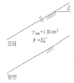
- β≤7.8˚
- β≤15.5˚
- β≤31.3˚
- β≤35.6˚
(정답률: 54%)
68. 현장 흙의 들밀도시험 결과 흙을 파낸 부분의 체적과 파낸 흙의 무게는 각각 1,800cm3, 3.95kg이었다. 함수비는 11.2%이고, 흙의 비중 2.65이다. 최대건조 단위중량이 2.07g/cm3일 때 상대다짐도는?
- 95.1%
- 95.2%
- 97.1%
- 98.1%
(정답률: 36%)
69. 지표가 수평인 곳에 높이 5m의 연직옹벽이 있다. 흙의 단위중량이 1.8t/m3, 내부마찰각이 25˚이고 점착력이 없을 때 주동토압은 얼마인가?
- 4.5t/m
- 5.5t/m
- 6.5t/m
- 9.13t/m
(정답률: 42%)
70. 외경(Do) 50.8mm, 내경(Di) 35.9mm인 스플리트 스푼 샘플러의 면적비로 옳은 것은?
- 46%
- 53%
- 106%
- 100%
(정답률: 52%)
71. ø=0°인 포화된 점토시료를 채취하여 일축압축시험을 행하였다. 공시체의 직경이 3cm, 높이가 7cm이고 파괴시의 하중계의 읽음값이 4.0kg, 축방향의 변형량이 1.6cm일 때, 이 시료의 전단강도는 약 얼마인가?
- 0.07kg/cm2
- 0.22kg/cm2
- 0.25kg/cm2
- 0.32kg/cm2
(정답률: 32%)
72. 그림과 같은 지반에 대해 수직방향 등가투수계수를 구하면?
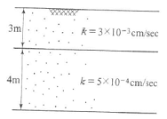
- 3.89×10-4㎝/sec
- 7.78×10-4㎝/sec
- 1.57×10-3㎝/sec
- 3.14×10-3㎝/sec
(정답률: 43%)
73. 널말뚝을모래지반에 5m 깊이로 박았을 때 상류와 하류의 수두차가 4.5m이었다. 이때 모래지반의 포화단위중량이 2.0t/m3이다. 현재 이 지반의 분사현상에 대한 안전율은?
- 0.85
- 1.11
- 2.0
- 2.5
(정답률: 37%)
74. 습윤단위중량이 2t/m3, 함수비 20%, 흙의 비중 Gs=2.6인 경우 포화도는?
- 86.1%
- 92.9%
- 95.6%
- 100%
(정답률: 42%)
75. 지름d=20㎝인 나무말뚝을 25본 박아서 기초 상판을 지지하고 있다. 말뚝의 배치를 5열로 하고 각열은 등간격으로 5본씩 박혀 있다. 말뚝의 중심간격 S=1m이고 1본의 말뚝이 단독으로 20t의 지지력을 가졌다면 하면 이 무리 말뚝은 전체로 얼마의 하중을 견딜 수 있는가? (단, Converse-Labbarre식을 사용한다.)
- 100t
- 400t
- 300t
- 200t
(정답률: 42%)
76. 베인 시험(Vane test)에 관하여 잘못 설명된 것은?
- 연약 점토의 강도 측정에 이용된다.
- 비배수 조건하의 사면 안정해석에 이용된다.
- 내부 마찰각을 정확히 측정할 수 있다.
- 회전 모멘트에 의하여 강도를 구할 수 있다.
(정답률: 48%)
77. 점토층이 소정의 압밀도에 도달소요시간이 단면배수일 경우 4년이 걸렸다면 양면배수일 때는 몇 년이 걸리겠는가?
- 1년
- 2년
- 4년
- 16년
(정답률: 52%)
78. 흙의 구성도에서 체적 V를 1로 했을 때 간극의 체적은? (단, 흙 입자의 비중 Gsw)
- Gsω
- n/100
- n(Gs-1)
- (1-n)γw
(정답률: 41%)
79. 삼축압축시험에 관련된 아래 식에 대한 설명 중 틀린 것은?
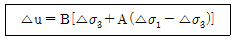
- 간극수압 계수 A값은 언제나(+)값을 나타낸다.
- 포화된 흙의 경우 B=1이다.
- 간극수압 계수 A값은 삼축압축시험에서 구할 수 있다.
- 포화된 점토에 구속응력을 일정하게 하고 간극수압을 측정했을 경우 축차응력과 간극수압으로부터 A값을 계산할 수 있다.
(정답률: 67%)
80. 아래 그림의 각측 손실수두 △h1, △h2, △h3를 구한 값은?
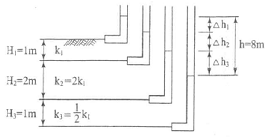
- △h1=3m, △h24m, △h31m
- △h1=4m, △h22m, △h32m
- △h1=2m, △h23m, △h33m
- △h1=2m, △h22m, △h34m
(정답률: 53%)
천연경량골재와 인공경량골재는 입자의 모양과 흡수율에서 차이가 있지만, 구조용으로 많이 쓰인다는 것은 인공경량골재에 해당한다. 인공경량골재는 입자의 모양과 크기를 조절할 수 있어서 구조용으로 많이 사용되며, 천연경량골재는 경량 콘크리트의 경량화나 단열성을 높이는 용도로 사용된다.